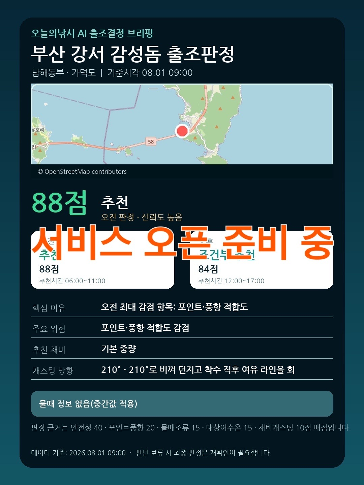
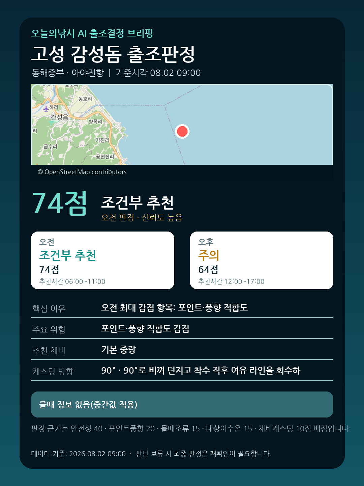
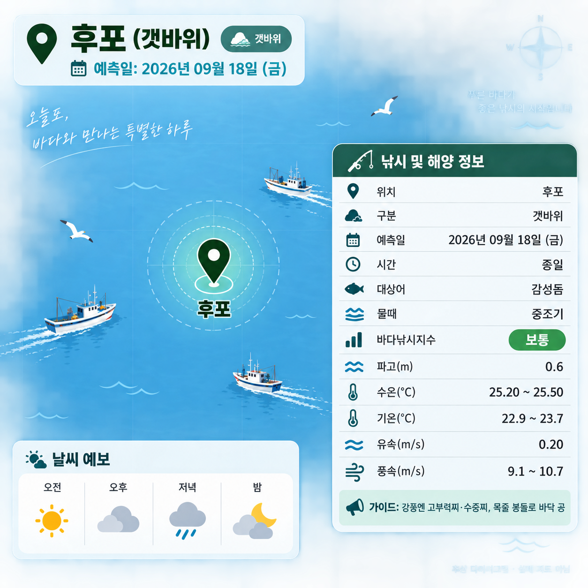
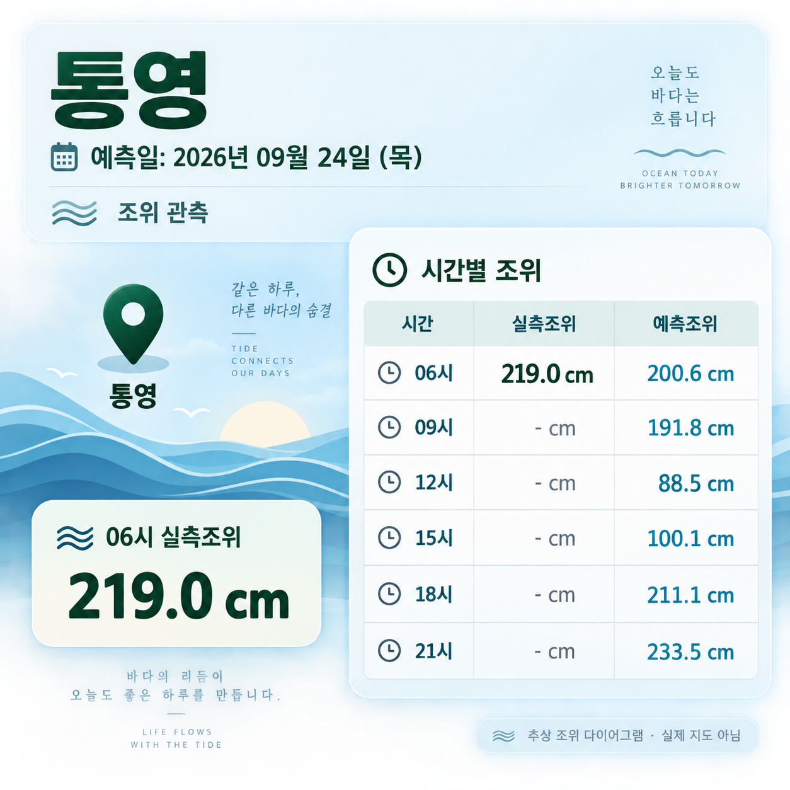
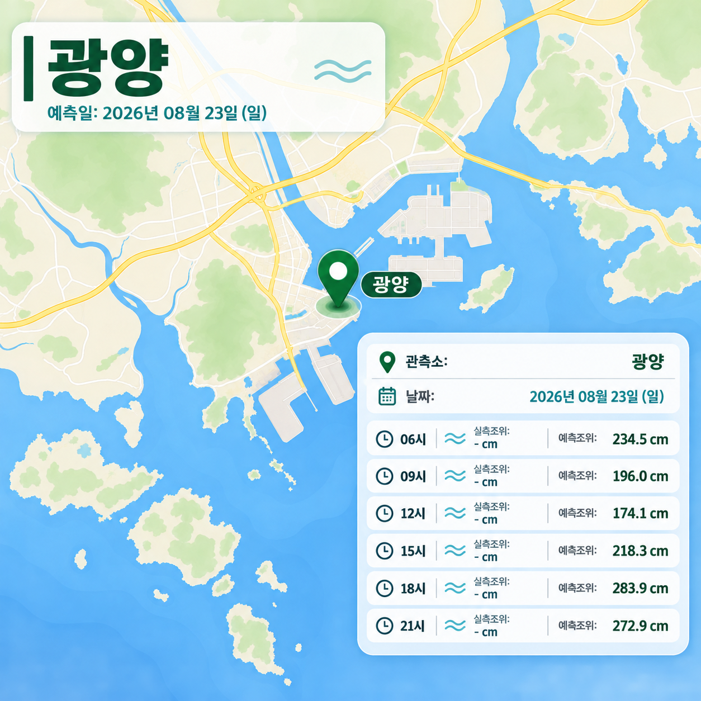
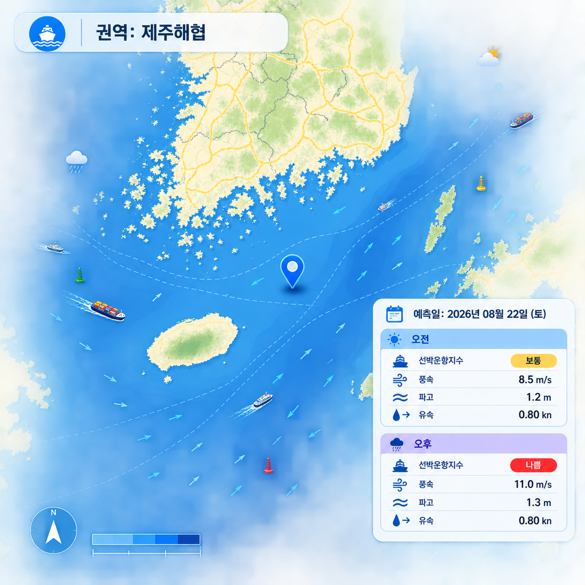
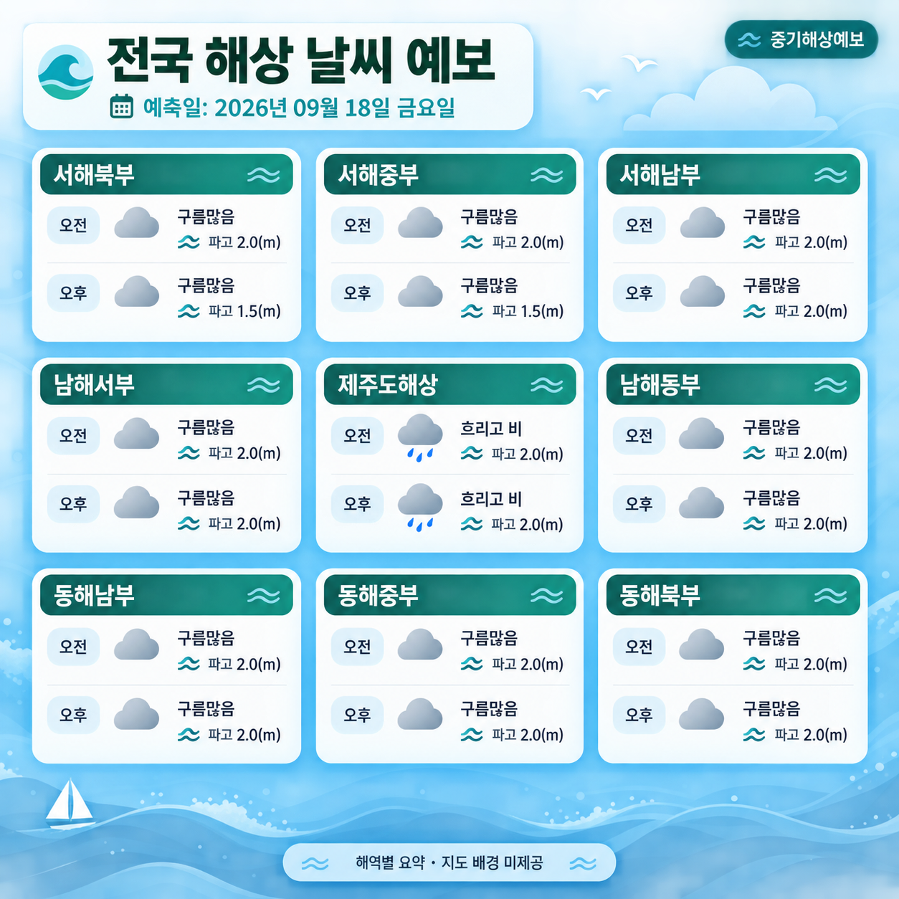
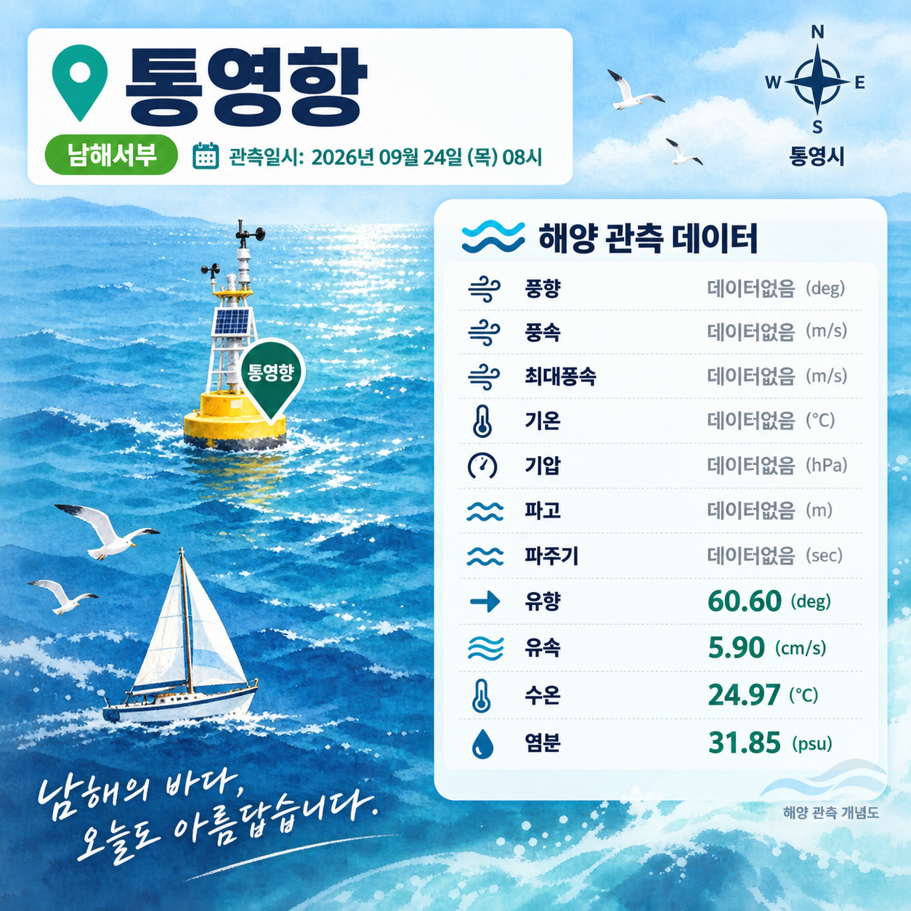

공공데이터 수집·분석부터 인포그래픽 생성, SNS 게시까지 사람 손을 거치지 않습니다. 아래 8개 서비스 카드를 눌러 크게 볼 수 있습니다.
낚시지수·안전 신뢰도·물때를 종합해 추천 / 조건부 추천 / 주의 / 비추천으로 번역합니다.

포인트·기준시각·지도와 함께 오전/오후 점수, 핵심 이유, 추천 채비, 캐스팅 방향까지 한 장으로 제시합니다.

안전성 40 · 포인트풍향 20 · 물때조류 15 등 배점 근거를 공개하고, 판단 보류 시 재확인을 안내합니다.

바다낚시지수·해상예보·선박운항지수·조위정보 4개 서비스를 지식 그래프로 연결한 통합 액티비티 등급입니다.
해양관측소·조위관측소의 원시 관측값과 선박 운항 가능성까지 매 시간 갱신합니다.

풍향·풍속·기압·파고·유속·수온·염분 등 관측소 원시값 12개 지표를 카드 한 장에 담습니다.

시간대별 실측 조위와 예측 조위를 나란히 비교해 물때 중심의 출조 계획을 돕습니다.

새벽·오전·오후·밤 4개 시간대의 풍속·파고·유속을 지수화해 도선·선상낚시 운항 가능성을 알립니다.
기상청 API허브·공공데이터포털 원천을 파싱해 낚시지수와 전국 해상 날씨를 매일 발행합니다.

물때·파고·수온·유속·풍속과 추천 채비까지, 포인트별 바다낚시지수를 한 화면에 담습니다.

서해·남해·동해·제주 전 권역의 오전/오후 날씨와 파고를 지도 한 장으로 브리핑합니다.
모든 카드의 숫자는 공공데이터 원천에서 자동 수집·적재된 값이며, 판정 문구는 검증된 규칙과 안전 임계치로만 계산됩니다. AI는 질문과 후기를 이해하는 역할만 맡고, 점수 산정에는 관여하지 않습니다.
| DATA | 기상청 API허브 · 해양조사원(KHOA) · 공공데이터포털 바다낚시지수 |
| ENGINE | 로컬 Ollama 기반 권역별 출조 RAG — 비용 절감·데이터 보호·환각 차단 |
| SAFETY | 기상특보·출입통제 등 안전 규칙은 AI가 덮어쓸 수 없는 1순위 규칙 |
| PUBLISH | 수집 → 분석 → 인포그래픽 생성 → 인스타그램 API 자동 게시 |
관심 지역을 등록하면 출조 적합도가 바뀔 때 가장 먼저 알려드립니다.
베타 신청하기